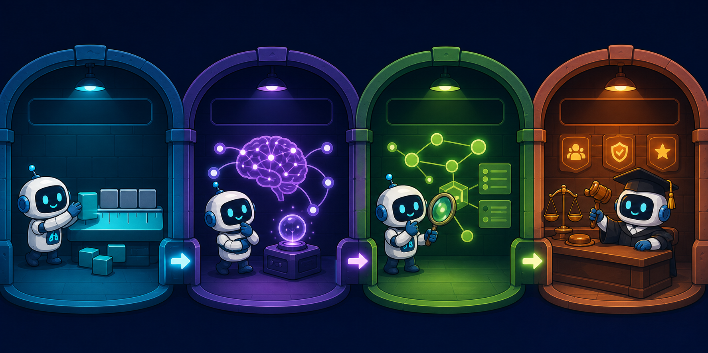

它在比較什麼？
字詞、語意、疾病標籤、臨床關係，還是 LLM 判定的錯誤。
Beginner story edition
把每個指標想成一位不同的檢查員。同一份報告送進去，16 位檢查員會因為工作不同，做出不同判決。

公式放到最後，不再要求讀者一開始就知道 token、embedding 或 micro-F1。
字詞、語意、疾病標籤、臨床關係，還是 LLM 判定的錯誤。
先從 Reference 與 Candidate 的差別理解分數為何升降。
直覺建立後，再把 P、R、F1 與實作細節接上去。
房間代表評分時「看見的世界」。越往後，越接近真正的臨床判斷。
只看寫出來的詞與片段，便宜快速，但不懂否定與同義改寫。
把意思相近的詞拉在一起，能認同義詞，仍可能忽略臨床真假。
把報告拆成疾病、位置、關係或時間，檢查臨床事實是否一致。
讓專科模型或 LLM 判斷錯在哪裡，以及這個錯誤有多嚴重。
16 張共用同一套讀法；點進去再看故事、例句與公式。